For 10 years I have been an active user of a website called GitHub.
GitHub is one of those things that most normal people have heard of, but if you're someone who even tangentially involved with coding it's as famous as Google.com. Modern software is complex and involves teams of people having to keep track of large interconnected systems and add changes and features simultaneously. GitHub is a place that helps to facilitate this sort of thing.
It's very useful because, 1. it's a place to put the source code you're working on that isn't you local computer, so other people on your team can see and work on the source code. But it also has features like...
...and a lot of other nerd stuff I'm not nearly technical enough to understand

You can see the issues people have raised with one of my fonts
I started using github for my font work. But since then it has become an important part of my day to day life. You are reading this blog post thingy on my personal website, ewonrael.github.io, which as the name sort of gives away, is hosted on github.
Other projects I host on github include:
On github it's possible to have private code repositories. Some projects I use github to host aren't public, like mom's website.
Perhaps the main advantage of github is that it's a place to publicly publish tiny bits of software. Not polished tools, but little scripts that solve obscure problems. For example: a script that to me is a life saver, but I'm probably around one of 8 people that use is is sfdLib.py

so much better than other SFD to UFO converters!
The Egyptian type designer Khaled Hosny ran into a very specific problem and made a tiny stupid little tool to solve it, and when I ran into the same very specific problem I didn't have to go reinventing the wheel.
I love the computer as a tool that can do anything. It is so powerful and flexible. Whenever I have a weird random stupid idea for a project or run into a very specific problem, I poke around github to see if anyone has hacked something together. For example earlier this year I was wondering if anyone had made something that converts an image into ascii art. Sure enough:

thank god it's not written in rust
I can download and play around with the code. Of course the guy who made this wasn't forcing int values for pixels being multiplied so if you have a different version of numpy the whole thing crashes and burns. What a rube!

of course one wonders if numpy is even necessary for this basic arithmetic, maybe overkill, but whatever.
The point is this random guy from no where can play around with code and I can find it and make tiny improvements and it's all quite fun and empowering
One of the great joys of github is looking at who can contributed to what. In the world of font software you see the same faces pop up over and over, including in some unexpected places. I think Dave Crossland (DaveLab6) of Google Fonts is on a personal mission to contribute code to as many font software projects as possible as his little face shows up everywhere.
Recantly a new face has been showing up more and more.


On github contributions are "co-authored" by an AI agent. The idea of a single change to the code-base having more than one author is entirely unprecedented.
More and more software is being developed with the help of Claude, and other AI agents.
AI is really quite good at coding. It's good at writing code, it's good a troubleshooting what's wrong with broken code. I have played around with using AI to help me with coding projects and I have been really impressed by what it's capable of.
It's not surprising that for many people AI is something that helps them write better code and so they have embraced it as part of their workflow. I was noticing the little Claude logo in more and more places. These were experienced software developers working on projects that predate AI. I believe they could write the code without the use of AI, and I believe they understand what the code does, it's just easier and faster and more productive with the AI's help.
AI is now helped to write the code for projects like:
The list goes on and on. In fact it is so uncommon for software to be coded without the use of AI that that list would be far shorter. Off-hand the only software project I know of that isn't using AI is Godot, the game engine and GIMP, the free Photoshop alternative.
I thought Godot was banning AI outright because I remember reading news articles that led me to believe this, but apparently they do allow AI contributions so either the news was wrong or outdated but in either case it doesn't belong on the list as a counterexample
Like I said these are experienced developers using AI to help write code they could write themselves. I don't believe the quality of Blender has been harmed at all because Claude is helping to do some of the more menial coding work. Especally when it comes to troubleshooting broken code, having AI look at it and identify the problem can be very helpful. AI can help people understand the code they're writing better.
However, AI can also help you write code that you don't understand at all. Anyone can go into Google Gemini and say "make me a spinning cube for my website" and:
I don't understand this code at all. Gemini says it uses "Hardware Accelerated Rendering." I'm not sure I totally know what that means, and even if I did I couldn't tell you how code a hardware accelerated cube. Of course, I don't even know if this cube is hardware accelerated, as AI sometimes lies about stuff.
It also worked on the first try, and I didn't have to sign up or pay for anything, or download any software. You can do this too right now if you wanted.
As you can imagine this is very exciting and appealing and empowering. To be able to have some cool idea for a piece of software or a website and be able to say "Computer! Make me horse Tinder!" and have it slop together a working app/site/whatever. It's a very good feeling.
As you can imagine many people have started using AI to bring their software visions to life.
I first started noticing something weird was going on because I follow the Linux audio plugin scene. Audio plugins are sort of a niche interest, and Linux is sort of a niche interest and so their intersection is a scene that for the past ten years has been comprised of like 20-ish people.
To say that any sort of news or development coming out of the open source linux audio plugin scene is a rare occurrence would be an understatement. But in the past couple months there's been an explosion in the amount of plugins being released.
You would think this would be exciting, but they're all sort of a similar vibe.
Things like this farting unicorn cowbell plugin:

Or this string plugin that looks and sounds very jankey:
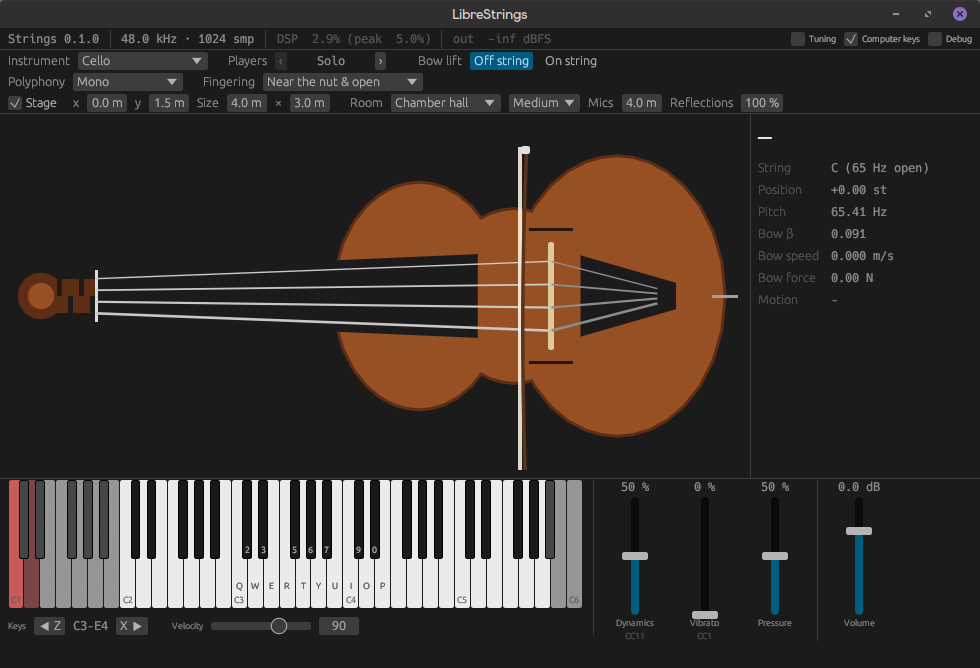
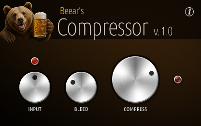
It's hard to articulate what exactly these plugins have in common, but if I had to try and explain I would say that the people making them at a very basic level don't understand what it is they've made or how it works.
The compressor plugin advertises a "Time-Free Dynamic Matrix," but also a knob that smooths how it responds to the sound. Smoothing a response is very much something that happens over time. I'm not sure what makes this a "Time-Free Dynamic Matrix" but if I try to interpret these claims on their face this plugin is advertising something impossible.
AI writing is also hard to explain exactly, but one tendency of AI writing is that it is very verbose. AI can generate a lot of text quickly.
Look at the Read Me section of the string plugin. It's over 200 lines of text, with a lot of technical information thrown at me. It also includes the honest "Vibe-coded as an experiment with Claude. I honestly have no idea how it works" line, which may be the only part of the readme written by a human, and the only part worth reading.
Compare that as a read me to that written for Calf Studio Gear. Calf Studio is a collection of audio plugins that go back 20 years or so and include over 50 people's code contributions. Its readme is 62 lines long.
People are lazy and writing a big document explaining what you're coding takes up precious time and energy that could be better spent coding more. No body wants to write a lengthy explination of the technical part of their code, especially when you're publishing the code online. I can tell, for example, that Calf studio is written in C++ using the GTK2 framework because I can see the source code.
I don't have any interest in reading 200+ lines of technical specs hallucinated by an AI. No human wrote this and no human will read it.
But of course, this sort of AI generated slop code isn't limited to linux audio plugins.
Recently there's been some buzz around a group of people (or maybe just one person referring to himself in the plural?) who have been using AI to make "clones" of the Adobe software sweet. AI clone of Photoshop, Illustrator, Lightroom, etc. The idea of a free alternative to Photoshop is very appealing, seeing as Photoshop is the industry standard, and costs around 275 USD a year. Photoshop also doesn't run on Linux (my computer) which these AI clones do, so the value proposition is fairly self evident.
The claims being made here are pretty big. They are advertising essentially 100% feature parody by the end of the month.
I tried downloading Photocraft, the photoshop replacement, and used it to crop a jpg photo. I am unimpressed. It suceeded at cropping and saving the jpg photo, which is a low bar but I'm glad it cleared that, but I noticed at least two bugs directly related to this simple task, as well as a couple others just poking around. I would describe that app as jankey and unpolished.

When exporting an image, it shows the image in a square with a grey and white checkerboard pattern filling in the gaps. This makes me think the exported image will be a square, but it won't be. Just a buggy/poorly implemented export dialogue.
The thing about this project, which I think is a common occurrence in this AI generated software world, is they are trying to fly long before they nailed walking. With a software like photoshop, I'm pretty sure it started with something like the crop tool, and really nailed that functionality before implementing more advanced features like warping or content-aware resizing. There's something strange and out of order about having clones of 7 Adobe software programs when basic functionality like the crop tool aren't well implemented. You would think with the effort/AI tokens it takes to get 7 pieces of software poorly implemented, you might be able to implement one well, which would be more useful.
Of course when I first starting seeing people talk about PhotoCraft, the vibe-coded photoshop alternative, I mistook it for Photon Studio, an entirely different free vibe-coded photoshop clone that runs on Linux which I learned about (I think it was released) earlier this month.
This is Photon, a completely unrelated app to Photocraft.
These days if you're looking for a free, jankey, vibe coded photoshop alternative your options include:
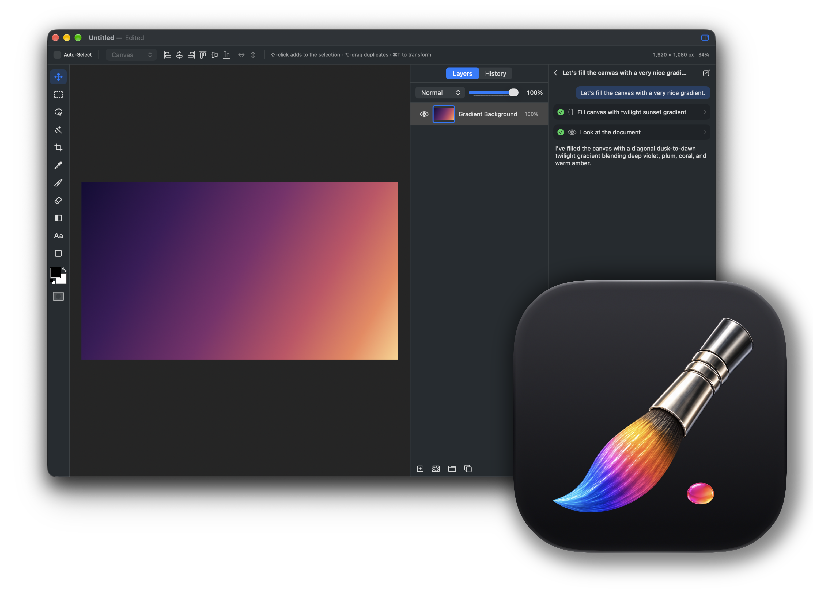
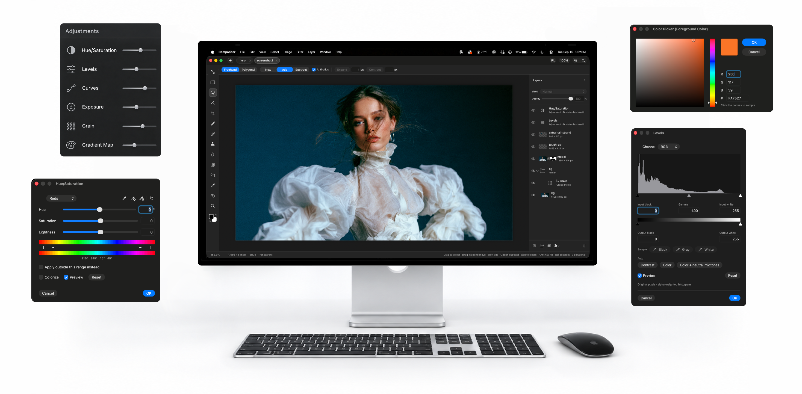
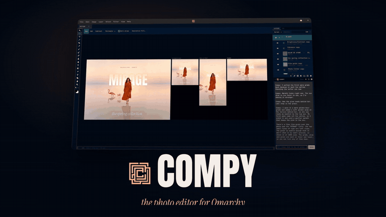
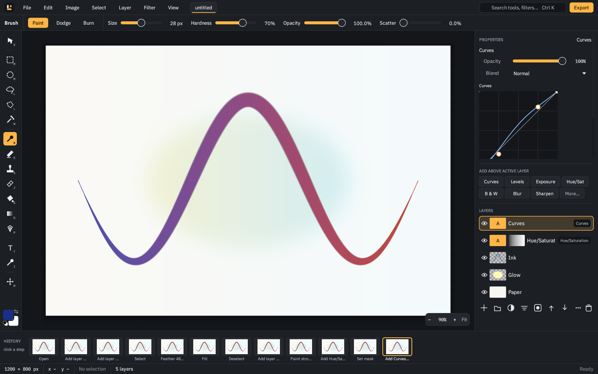
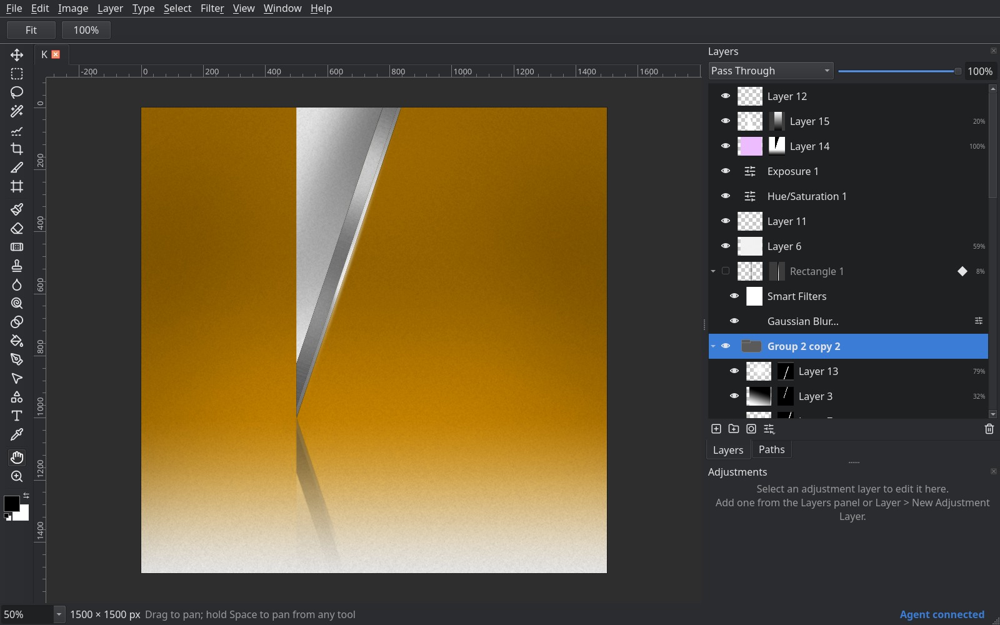
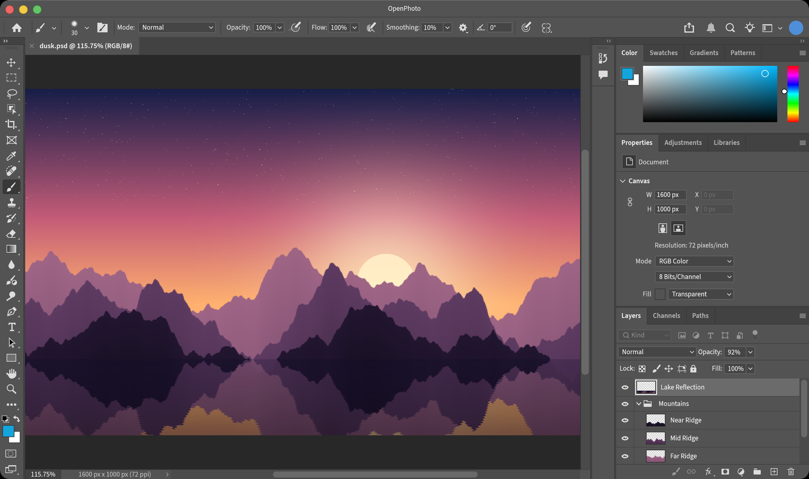
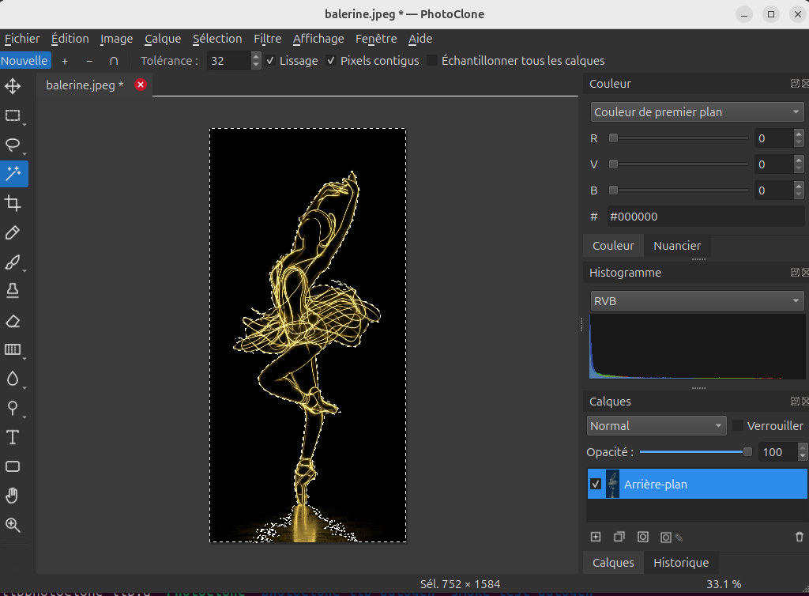
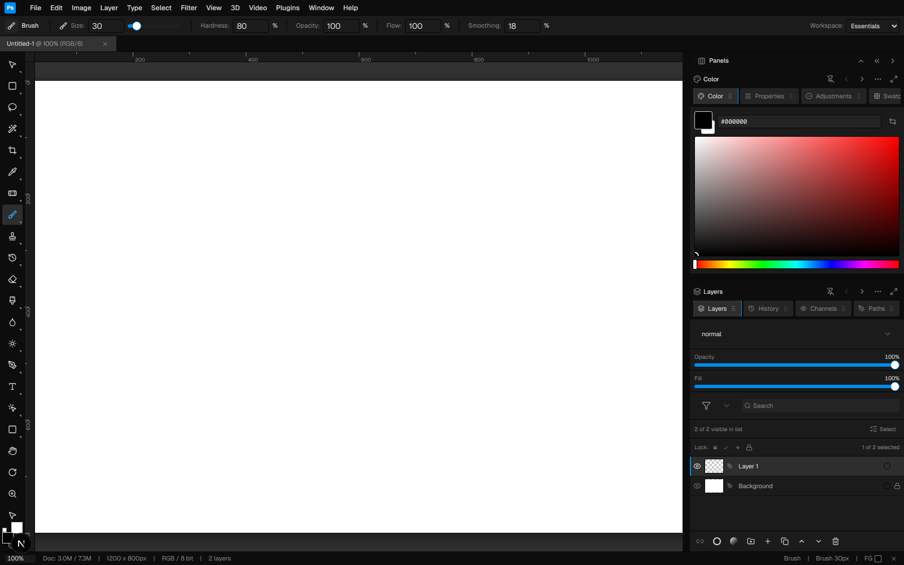
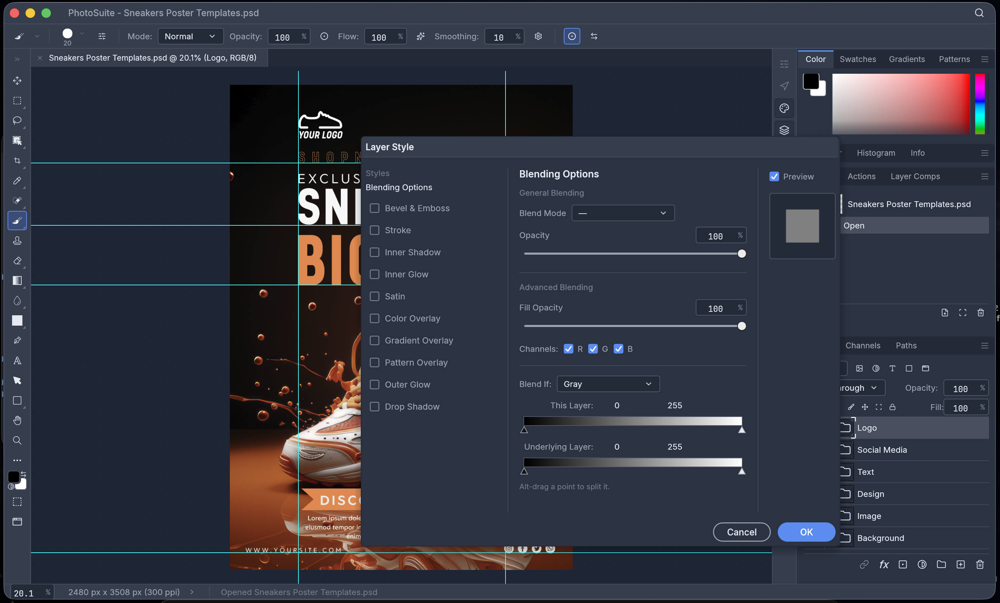
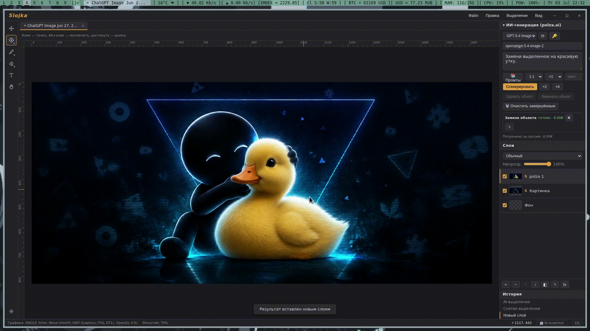
Of course I'm sure that by the time I'm done writing this there will be more.
Reading about PhotoVibe, the "free, open-source, local-first Photoshop alternative" that's also "early software" begs the obvious question: who, if anyone, is this for? Why would I want this? What is the point?
I have the same question for the farting unicorn plugin to be honest with you. It makes a cowbell sound. It's already quite possible to have my computer make a cowbell sound by using a recording of a cowbell.
We don't need a free alternative to Photoshop. There already is a free alternative to photoshop. It's called GIMP, and it was made without AI.
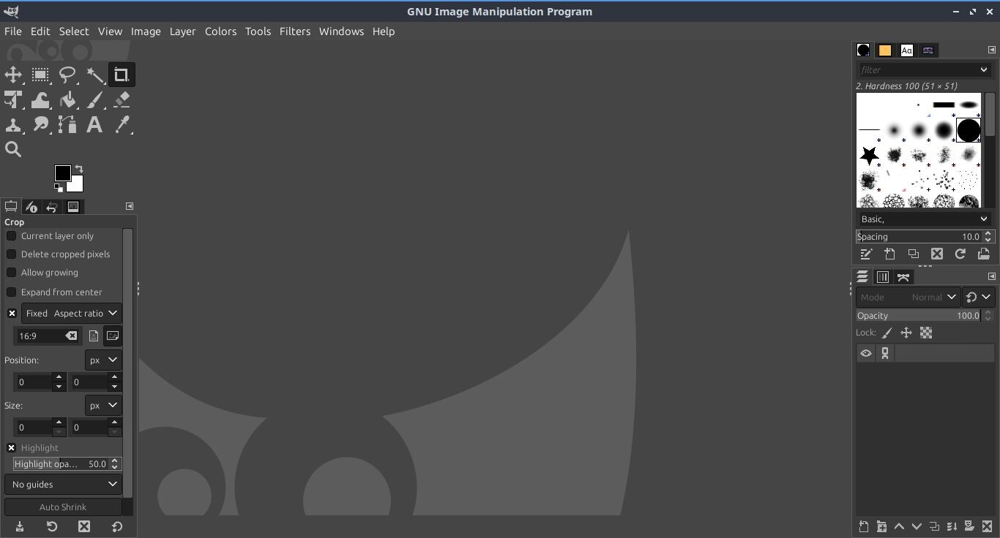
GIMP has existed for decades and unlike Photoshop its source code is publicly available, meaning in all likelhood the AIs were trained on GIMP's source code, so these "Photoshop" clones are, from a source code standpoint, more likely GIMP clones.
There's also Photopea, which is free and runs in your browser. Or Affinity.
Even in a world where there are no ethical concerns or implications with AI generated software, and where all of these Photoshop clones work perfectly well with zero bugs, these programs are sort of pointless and unnecessary.
My experience using AI to write code for me as well as seeing how many experienced developers have embarrassed and incorperated AI tools into their projects leads me to believe that AI is very proficient at writing code. Let's say, for the sake of argument, there is no meaningful difference from the code written by an AI agent and that written by a fairly competent developer.
One would think then, that these "vibe coded" software projects would be on par with other hobbyist coding projects. I'm not expecting something enterprise level, but something on par with the hacky, cobbled together code I've been using for years to help make my fonts.
In fact, I am sure, somewhere out there, there is a piece of software made by someone who doesn't know a thing about coding that is really quite amazing. But my experience downloading and playing around with the software sloped up by AI is that is sort of sucks to use.
There's, I think, two underlying, related reasons for this, and a third separate, but obvious reason
Good software takes a lot of time to make. This isn't (just) because coding takes a lot of time, but because refining a feature requires a lot of adjusting and tweaking and improving. Recently I've been working on getting Dancing About Architecture back online. As part of that process I'm asking myself, does the site look good on a mobile screen? Does it look good on an Apple retina display? Does it look good if the browser window is really really wide for some reason? Does this feature work for a finger input instead of a mouse input? There is no real way of answering this sort question that doesn't involve testing it out. You try one thing, see how it looks on a small screen, make a note of what works and what needs adjusting, adjust stuff, try again, on and on.
I have a lot of experience making websites at this point. I have a lot of experience making sites look good on mobile screens. I can get around 80% of things working well on the first try. There isn't a single person on earth that can bat 100. This isn't about experience level or technical knowledge. When you are making something you are making an experience and there is just part of it that can only be understood through experiencing it.
Building software, just like making anything, is an iterative experience. You make something, see what works and what doesn't about it, then adjust and improve it
Going back to my rotating cube. I like my cube. It's very impressive what the AI can do. One thing about it is it sort of rotates around up until you click on it, then it stops dead. It would be nice if when you click and dragged it the momentum of that could keep it moving in that direction.
Did AI do a bad job of interpreting my instructions? No. Would a more competent cube maker know to implement a momentum movement system? Maybe. But the reality is, this is the sort of thing you only learn through testing it out.
The problem with the AI generated versions of Photoshop, is that they were all generated by AI in the span of a month. There just isn't enough time on a timeline like that for a human being to do the sort of play-testing that allows for the real and necessary refinement. The AI versions of photoshop are full with a million tiny decisions that make you think to yourself if someone had tried using/doing this, they would immediately know it shouldn't be done this way, but no body has tried using all the features.
The "people" (person) who made PhotoCraft, one of the knockoff versions of Photoshop is also making a knockoff version of Avid Pro Tools, a knockoff version of Autodesk AutoCAD, a knockoff version of Adobe InDesign, and a knockoff version of Microsoft Word.
This is complete lunacy; it is very telling. It doesn't matter how good AI is at coding, you need to play test and iterate on your software to make it good. To competently make a knockoff version of Autodesk AutoCAD, you have to be someone who knows how to use CAD software. This is highly technical, esoteric stuff. There's no way this guy understands the needs of a video editor, photo editor, graphic designer, music producer, and CAD specialist well enough to develop software for all of them. For any of this software to be halfway useful you would have to actually try using it. No body on this planet has the kind of deep technical knowledge to meaningful evaluate all of these pieces of software, and if such a person does exist, I have a feeling they could also learn to code without the use of AI.
I can't speak for the AutoCAD people, but I can speak as a graphic designer and as a musician. It is deeply bizarre to offer both a knockoff version of Microsoft word and Adobe InDesign. Both are programs dedicated to laying out documents, so their function is sort of redundant, but their target demographic and design ethos couldn't be further from each other. It feels like a restaurant that offers both Kraft boxed mac and cheese and also shrimp mac and cheese with gruyère. Who are we catering to? What's going on in the kitchen?
Making a knockoff version of Avid Pro Tools is also a real tell. Pro Tools is a software for music production that no musicians use. It is incredibly expensive, it sucks to use, no one uses it to make music.
The people who do use Avid Pro Tools are institutional clients. It is used by concert halls and professional recording studios. The point of it as a piece of software is that it will work with all your microphones and do-dads and complicated technology that exists in the institutional setting. The thing these these institutional clients are paying for is the reassurance that the software will work with their Burl Audio B80 Mothership and Grace Design m908.
There is just no way to know that your AI slop version of Pro Tools works with this equipment unless you test it (the two things I listed alone both cost ~10K so we know they didn't), and any clients who have 10K hardware can obviously afford to pay for Pro Tools.
It's just incredibly obvious that the "team" behind this doesn't know the first thing about music-making, which of course mean they don't know the first thing about evaluating if a piece of music-making software is good or bad to use.
The hobbyist software I'm familiar with that comes from the pre-AI era doesn't have a website. Often times it doesn't have a graphical user interface. It doesn't claim to do a million things, or even 10 things. It often is a little script that claims to turn a SFD file into a UFO file.
It's very humble. I know the person who made it probably used it. In fact they probably used it a lot and in many ways. Small, tiny, humble, but reliable.
A problem with AI is it likes to lie. But not only this, it likes to lie in ways that on first blush aren't obvious.
A while back I had a spreadsheet full of people's names and I asked Google Gemini to look those people up on Wikipedia and see how many different languages their Wikipedia page had been translated into. First of all, it had a habit of doing 50-100 names then stopping, and I would have to say "no, please actually do all the names," but second of all it would just lie. It made up plausible sounding numbers. It never checked Wikipedia. If all I hadn't done the leg-work of checking some of the names of Wikipedia myself I would never had realized it had made names up.
One of the things that's increasingly apparent poking around PhotoCraft, the slop version of Photoshop, is just how many features aren't implemented at all. I tried blurring a photo, a fairly basic feature, and it didn't work. But the thing about it is, there is a menu option to blur the photo.

It's almost as good as the real thing.
I don't know if the person developing PhotoCraft knows this is a missing feature and has intentionally left the blur button as a sort of placeholder, or if the AI has taken shortcuts and is filling in features like it does Wikipedia page counts, but in either case it creates a really uniquely sucky user experience. Most of the time, if a piece of software doesn't do something, it's not going to have a button claiming it does do that thing. It creates this experience that feels like the software is lying to me.
This is sort of what AI does in general. It is trained to mimic things, and it is very good at mimicry, but it's hollow. Often reading AI generated text it has the apperance or structure of text, but of course most text throughout human history was written with the intention of communicating meaning, and AI generated text is created to create text and often I read it and feel like there's nothing there. It's empty.
A year or two ago I wanted to make BluRay DVDs and was a bit disappointed to learn that there doesn't really appear to be good options when it comes to programs that do so. The best program seems like Adobe Encore, which they stopped making/supporting years ago, but yesterday I poked around GitHub and all the sudden there were a couple options for making Blurays.
At first this seems like a wonderful development, but looking over the projects you start to notice the signs of AI generated software. Verbose and technical readmes that over promise. A development history lasting 2 weeks, with only two credited developers, one of which is Claude. I just don't have a ton of confidence that these projects do what they claim they do.
Even if they do work I'm not so sure it won't have weird holes or a frustrating unrefined user experience.
Github doesn't publish month my month statistics on how many users are on the site, or how many software projects are being created, but I will tell you, the experience in the past month or so is that this sort of AI slop software has really exploded. It was always a bit of a gamble searching for software on Github, many projects are broken, don't work on your system, aren't made fro your needs, but these days it feels like 10 AI slop projects for every one legitimate, useful project.
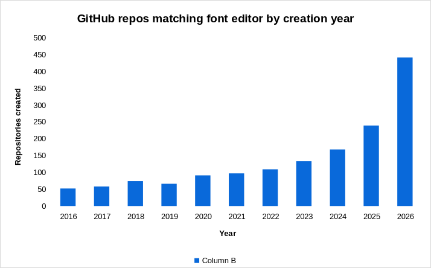
Graph showing the amount of new font editor projects year by year.
And it's hard to tell one from the other. As established AI is being adopted by legacy coders and legacy coding projects, so seeing a little Claude logo as a contributor doesn't necessarily indicate that the project is slop. The boundary is blurry.
Github is also experiencing a much higher rate of issues this year. This is likely caused by an explosion in the amount of people creating and uploading software projects
There's something worth meditating on about just how many people are asking Claude to make a clone of Photoshop. It's not just that these programs are bad or buggy or pointless. It's that the idea is stupid. It's a stupid, unoriginal idea, that's obviously pointless. AI has unleashed this very powerful tool of coding into the world. Anyone can make software. Anyone can have a vision for a program and ask the computer to realize it, no coding knowledge required.
I really believe this can produce some amazing and interesting results. I'm sure there are people out there who have a clear vision, who are dedicated enough to actually refine the programs they're making. Who will make something not only polished, but unique. But that takes time, and these tools are new. The people who are slopping out AI clones of Photoshop that don't care if basic functionality is broken are able to publish today.
I just hope that I'll be able to find that interesting unique well made software through the avalanche of Photoshop clones, and that Github doesn't get so overwhelmed with all the new software that it goes offline.